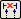
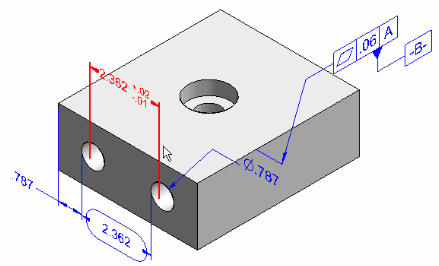
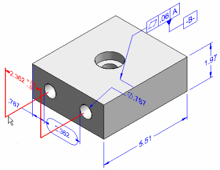
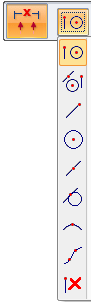
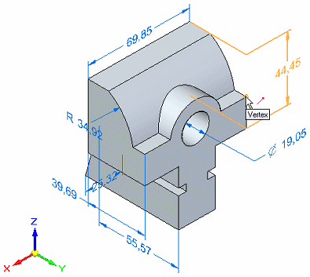

Move PMI elements in 3D
The Move Dimension command moves PMI dimensions and annotations. They move in a direction that is normal to the plane where they reside, adding extensions to the projection lines as needed.
-
Select the Move Dimension command by doing one of the following:
-
In the ordered environment, select PMI tab→Tools group→Move Dimension

, and then click the PMI element you want to move. -
In the synchronous environment, right-click a PMI element in the graphics window or in PathFinder, and then choose Move Dimension.
-
-
Specify the new location using one of these methods:
-
In the graphics window, move the cursor to the new location and then click.
As you move the cursor, the PMI element is dynamically moved with it.
Example:Before

After

-
Specify a keypoint by doing the following:
-
Click the Keypoints button on the command bar, and then select the type of keypoint you want to use from the list.

-
Move the cursor to locate a keypoint, and then click to place the PMI element.

-
-
-
Click the next dimension or annotation to move, or press Esc or click Select to exit the command.
You can use Alt+drag to detach a PMI dimension or annotation from one model element and reattach it to a different model element. To learn how to do this, see Change the parent of a dimension by dragging it.
How do I
Display and edit PMI elementsAdd PMI dimensions and annotations
Select multiple reference elements
Create PMI dimensions from the assembly level
Place a PMI dimension using an intersection point
Set a PMI dimension and annotation plane
Show custom occurrence properties in PMI
Reposition PMI text, lines, and arrows
Copy PMI elements from a sketch or feature
Add or remove PMI elements in a model view
Learn more
PMI dimensions and annotationsPMI edit handles and cursors
Placing PMI dimensions using intersection points
Look up more details
Lock Plane commandLock Dimension Plane command bar
Move Dimension command
Add To Model View command
Remove From Model View command